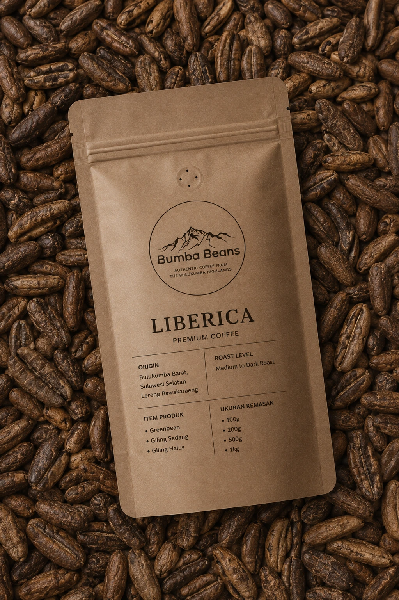

Liberica Bumba Beans tumbuh di kawasan dataran tinggi Sulawesi Selatan, tepatnya di lereng Bawakaraeng dengan ketinggian sekitar 1.200–1.600 MDPL. Kondisi tanah dan udara pegunungan memberikan lingkungan yang mendukung pertumbuhan kopi dengan karakter yang khas.
Biji kopi mentah yang belum disangrai, cocok buat kamu yang mau menyangrai sendiri di rumah.
Tekstur bubuk medium, pas buat metode seduh manual seperti V60 atau drip.
Tekstur bubuk halus, cocok buat mesin espresso.
Setiap biji kopi diproses dengan metode yang dipilih untuk menjaga karakter dan cita rasanya.
Buah kopi dikeringkan bersama kulit dan buahnya untuk mempertahankan karakter rasa yang alami dan manis.
Kulit dan daging buah dikupas sebelum pengeringan, menghasilkan rasa yang lebih bersih dan cerah.
Sebagian lendir buah dipertahankan saat pengeringan untuk memberikan karakter rasa yang manis.
Biji kopi melalui proses fermentasi terkontrol untuk membentuk karakter rasa yang lebih kompleks.